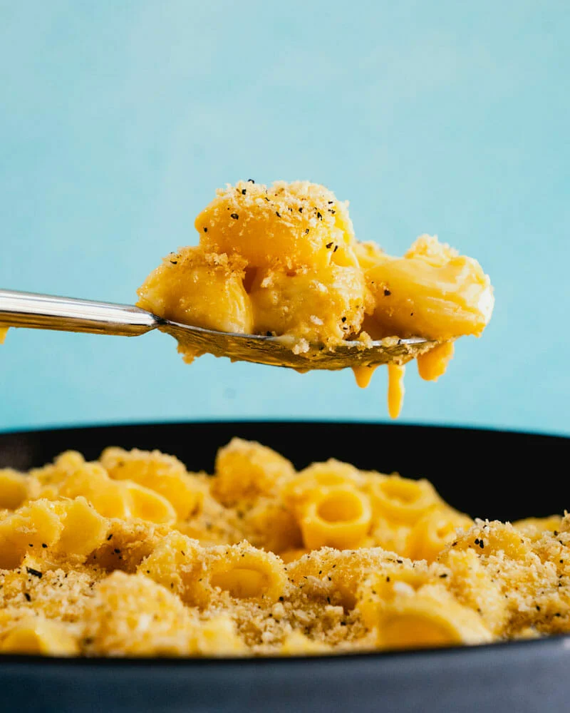

Mac and Cheese

The Classic Delicous Mac and Cheese
This receipie for Macaroonie and Cheese is like no other, it is used by fancy restauransts for its cheesy and outstanding taste.
Gather these ingredients so that you can make it yourself at home. Please feel free to share with your freinds and family during
this holiday season.
- 2 cups of uncooked elbow Macaroonie (regular or gluten free)
- 3 tablespoons unsalted butter
- 2 table spoons all-purpose flour
- 1/2 teaspoon salt
- dash of pepper
- 2 cups of milk
- 8 ounces valveeta
- Spray a 11X7 or 2 ½ quart casserole dish with cooking spray.
Set aside. Preheat the oven to 350ºF.
- Cook the macaroni according to the directions for almost al dente (about 1 minute less). The macaroni will finish cooking in the oven once it's assembled. Drain and set aside. (See recipe notes for gluten free adaptation.)
2 cups uncooked elbow macaronie
- Melt the butter in large saucepan over medium heat. As soon as the butter is melted, whisk in flour, salt, and pepper.
Cook for about 30 seconds - 1 minute, or until mixture bubbles.
- Slowly whisk the milk into butter / flour
mixture and bring to a boil. Boil for 1-2 minutes, or until thickened.
- Reduce heat to low and gradually add chopped Velveeta cheese, a handful at a time. Stir until the cheese is melted and sauce is smooth, about 5 minutes. Stir in cooked macaroni
- Transfer combined mac and cheese to prepared casserole dish. Top with optional cheddar cheese, and bake for 30 minutes, or until cheese topping is melted and mac and cheese is bubbly.